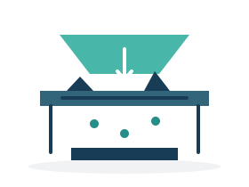
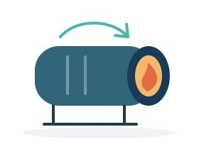
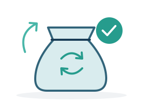
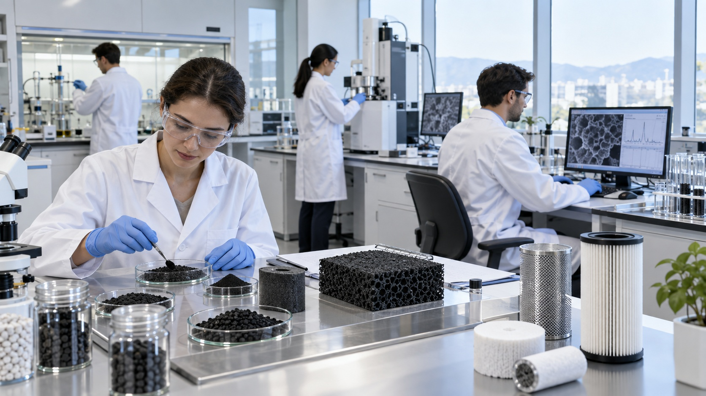

Virgin Activated Carbon
신탄 제조
원료의 특성과 사용 목적을 고려하여 높은 흡착성능과 균일한 품질의 활성탄을 제조합니다. 원료 선정부터 활성화, 입도 관리, 품질검사까지 제조공정을 체계적으로 관리합니다.
자세히 보기 ↗
신탄 제조부터 사용 활성탄의 회수·재생까지.
소재의 성능과 자원의 가치를 함께 이어갑니다.

예산 공장은 활성탄 신탄 제조와 사용 후 활성탄의 리사이클을 담당하는 생산기지입니다.
원료의 특성과 사용 목적을 고려한 고품질 활성탄을 제조하고, 사용이 끝난 활성탄을 회수·재생하여 다시 산업현장에 공급함으로써 활성탄의 생애주기를 연장합니다.
예산 공장 소개 ↗
공기정화 · VOC · 수처리
제품 보기야자각, 석탄, 목재 등의 원료를 활성화한 후 일정한 입도로 제조한 입자 형태의 활성탄입니다. 우수한 흡착성능과 취급성을 갖추고 있어 공기정화, VOC 제거, 악취 제거 및 수처리 등 다양한 분야에 폭넓게 적용할 수 있습니다.

정수 · 폐수처리 · 탈색
제품 보기활성탄을 미세한 분말 형태로 제조하여 접촉면적과 흡착속도를 높인 제품입니다. 주로 처리 대상 유체에 직접 투입하여 오염물질을 흡착한 후 침전 또는 여과공정을 통해 제거하는 방식으로 사용되며, 정수·폐수처리 및 탈색·정제 분야에 적합합니다.

산업용 에어필터 · 가스처리
제품 보기활성탄 원료를 일정한 직경의 원통형으로 성형하여 제조한 활성탄입니다. 균일한 형상으로 공기의 흐름을 안정적으로 유지할 수 있으며, 높은 기계적 강도와 상대적으로 낮은 압력손실 및 분진 발생 특성으로 인해 산업용 에어필터와 가스처리 분야에 적합합니다.
사용이 완료된 폐활성탄 회수
폐활성탄의 상태 및 재생 가능성 확인

03이물질 제거 및 재생공정을 위한 전처리

04흡착된 물질을 제거하고 세공구조·흡착성능 회복
흡착력 · 수분 · 회분 · 입도 등 주요 품질항목 확인

06품질기준을 충족한 재생 활성탄을 적합한 용도에 재활용

요오드 흡착력·수분·회분·입도 분포·충전밀도·경도 등 주요 항목을 관리합니다.
기술·품질 보기 ↗제품 선정부터 적용 검토까지, 문의 내용을 남겨주세요.